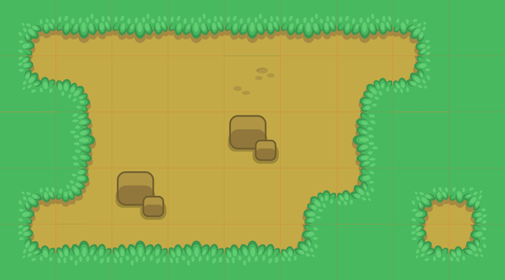

Godot's design philosophy
Now that you've gotten your feet wet, let's talk about Godot's design.
Every game engine is different and fits different needs. Not only do they offer a range of features, but the design of each engine is unique. This leads to different workflows and different ways to form your games' structures. This all stems from their respective design philosophies.
This page is here to help you understand how Godot works, starting with some of its core pillars. It is not a list of available features, nor is it an engine comparison. To know if any engine can be a good fit for your project, you need to try it out for yourself and understand its design and limitations.
Please watch Godot explained in 7 minutes if you're looking for an overview of the engine's features.
Object-oriented design and composition
Godot embraces object-oriented design at its core with its flexible scene system and Node hierarchy. It tries to stay away from strict programming patterns to offer an intuitive way to structure your game.
For one, Godot lets you compose or aggregate scenes. It's like nested prefabs: you can create a BlinkingLight scene and a BrokenLantern scene that uses the BlinkingLight. Then, create a city filled with BrokenLanterns. Change the BlinkingLight's color, save, and all the BrokenLanterns in the city will update instantly.
On top of that, you can inherit from any scene.
A Godot scene could be a Weapon, a Character, an Item, a Door, a Level, part of a level… anything you'd like. It works like a class in pure code, except you're free to design it by using the editor, using only the code, or mixing and matching the two.
It's different from prefabs you find in several 3D engines, as you can then inherit from and extend those scenes. You may create a Magician that extends your Character. Modify the Character in the editor and the Magician will update as well. It helps you build your projects so that their structure matches the game's design.

Also note that Godot offers many different types of objects called nodes, each with a specific purpose. Nodes are part of a tree and always inherit from their parents up to the Node class. Although the engine does feature some nodes like collision shapes that a parent physics body will use, most nodes work independently from one another.
In other words, Godot's nodes do not work like components in some other game engines.

Sprite2D is a Node2D, a CanvasItem and a Node. It has all the properties and features of its three parent classes, like transforms or the ability to draw custom shapes and render with a custom shader.
All-inclusive package
Godot tries to provide its own tools to answer most common needs. It has a dedicated scripting workspace, an animation editor, a tilemap editor, a shader editor, a debugger, a profiler, the ability to hot-reload locally and on remote devices, etc.

The goal is to offer a full package to create games and a continuous user experience. You can still work with external programs as long as there is an import plugin available in Godot for it.
That is also partly why Godot offers its own programming language GDScript along with C#. GDScript is designed for the needs of game developers and game designers, and is tightly integrated in the engine and the editor.
GDScript lets you write code using an indentation-based syntax, yet it detects types and offers a static language's quality of auto-completion. It is also optimized for gameplay code with built-in types like Vectors and Colors.
Note that with GDExtension, you can write high-performance code using compiled languages like C, C++, Rust, D, Haxe, or Swift without recompiling the engine.
Note that the 3D workspace doesn't feature as many tools as the 2D workspace. You'll need external programs or add-ons to edit terrains, animate complex characters, and so on. Godot provides a complete API to extend the editor's functionality using game code. See The Godot editor is a Godot game below.
Open source
Godot offers a fully open source codebase under the MIT license. This means that the codebase is free for anyone to download, use, modify, or share, as long as its license file is kept intact.
All technologies that ship with Godot, including third-party libraries, must be legally compatible with this open source license. Therefore, most parts of Godot are developed from the ground up by community contributors.
Anyone can plug in proprietary tools for the needs of their projects — they just won't ship with the engine. This may include Google AdMob, or FMOD. Any of these can come as third-party plugins instead.
On the other hand, an open codebase means you can learn from and extend the engine to your heart's content. You can also debug games easily, as Godot will print errors with a stack trace, even if they come from the engine itself.
Note
This does not affect the work you do with Godot in any way: there's no strings attached to the engine or anything you make with it.
Community-driven
Godot is made by its community, for the community, and for all game creators out there. It's the needs of the users and open discussions that drive the core updates. New features from the core developers often focus on what will benefit the most users first.
That said, although a handful of core developers work on it full-time, the project has thousands of contributors at the time of writing. Benevolent programmers work on features they may need themselves, so you'll see improvements in all corners of the engine at the same time in every major release.
The Godot editor is a Godot game
The Godot editor runs on the game engine. It uses the engine's own UI system, it can hot-reload code and scenes when you test your projects, or run game code in the editor. This means you can use the same code and scenes for your games, or build plugins and extend the editor.
This leads to a reliable and flexible UI system, as it powers the editor
itself. With the @tool annotation, you can run any game code in the editor.

RPG in a Box is a voxel RPG editor made with Godot. It uses Godot's UI tools for its node-based programming system and for the rest of the interface.
Put the @tool annotation at the top of any GDScript file and it will run
in the editor. This lets you import and export plugins, create plugins
like custom level editors, or create scripts with the same nodes and API
you use in your projects.
Note
The editor is fully written in C++ and is statically compiled into the
binary. This means you can't import it as a typical project that would have a
project.godot file.
Separate 2D and 3D engines
Godot offers dedicated 2D and 3D rendering engines. As a result, the base unit for 2D scenes is pixels. Even though the engines are separate, you can render 2D in 3D, 3D in 2D, and overlay 2D sprites and interfaces over your 3D world.